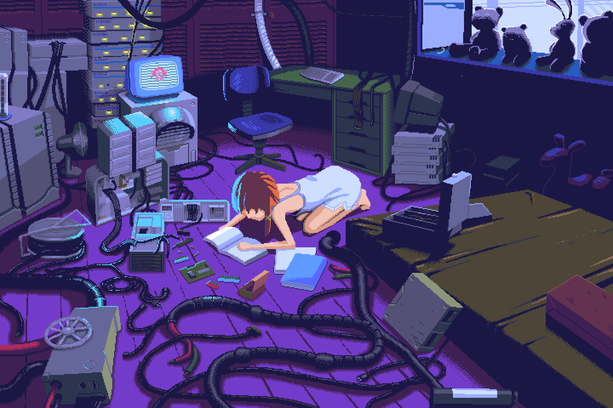
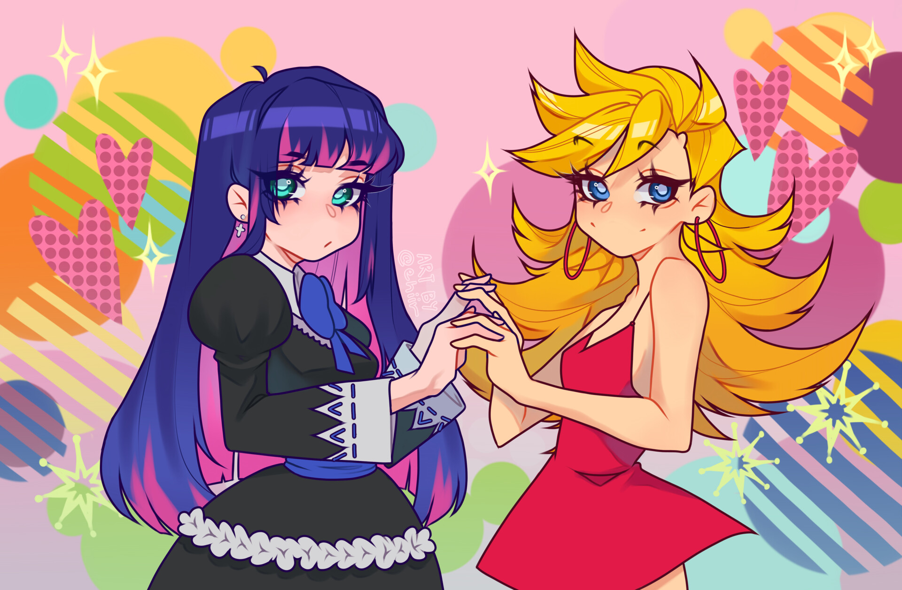
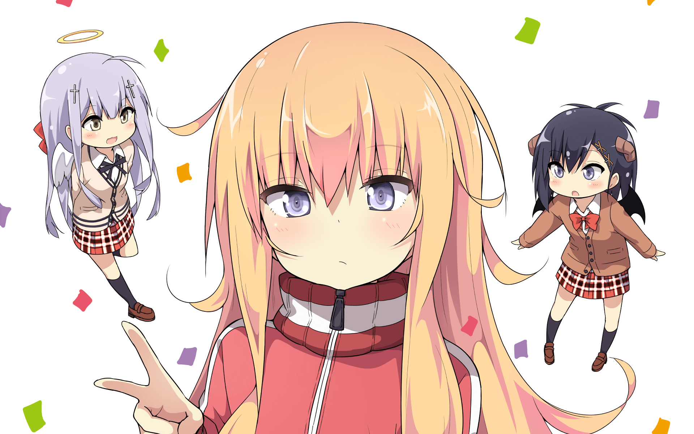
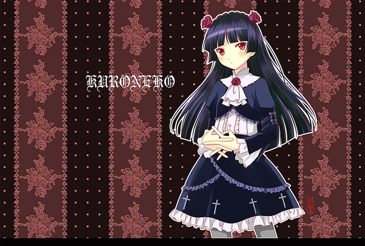
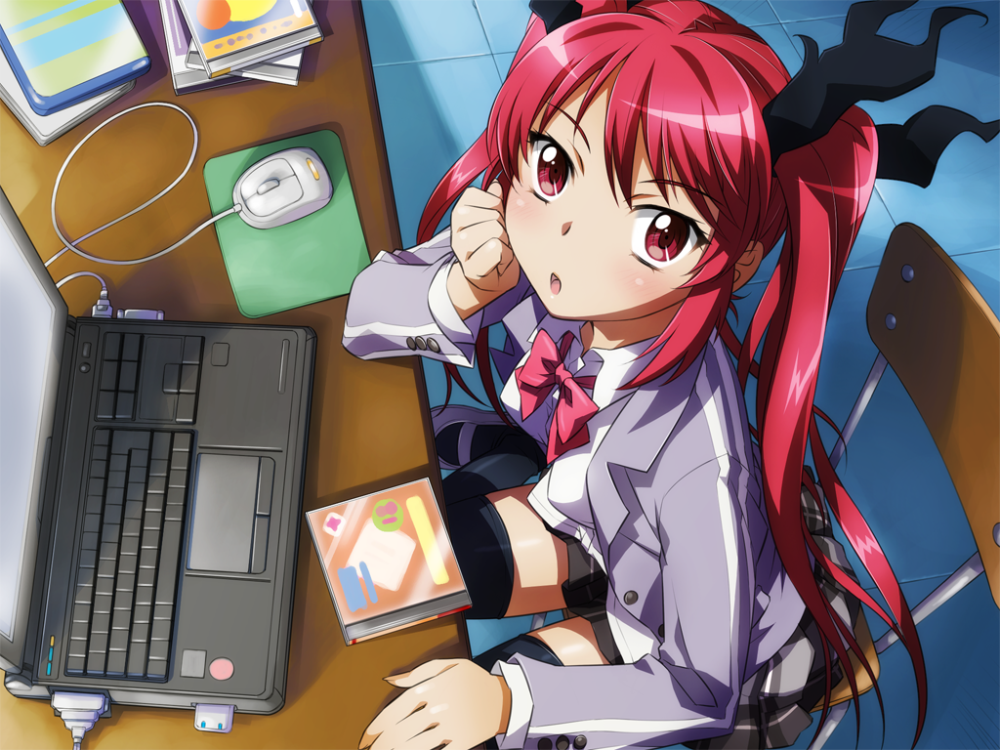

Top animes

Serial Experiments Lain
It's about Lain Iwakura discovering the Wired, a network that connects people remotely, and slowly losing her sense of self the longer she uses it.
And also a bunch of people start to suicide to leave this fake world and live eternally in the Wired, the more real world.
I really like it and think it's the best anime I've watched yet, because it touches on a lot of topics I find very interesting, like philosophy and cybernetics.
 _ iinagi_(kashiwa_keira).jpg)
No Game No Life
It's got an incredibly good premise, and although I don't entirely like the humor, it's still really cool.
It revolves around Sora and Shiro, the two siblings that beat an otherwordly god at chess and thus get invited to his world, Disboard.
In this world a horrible war occured, which managed to fatigue the stars and dry the oceans, so when Tet ended up "winning" the war, he forbade bodily harm; however, this didn't get rid of conflict, so he made it an immutable rule of the world for all conflicts to be resolved in an absolutely binding game, as long as the parties agreed beforehand.
Here's the interesting part, you can cheat as long as you don't get caught.

Panty and Stocking with Garterbelt
This one is a very vulgar comedy about the adventures of Panty (right) Anarchy and Stocking (left) Anarchy, the angel sisters that kill ghosts so that they can eventually go back to heaven, given that they got kicked out for being total bitches.
They might be angels, but their weapons for killing ghosts are a pair of panties that turns into a handgun and a pair of stockings that turn into swords respectively.
I'm currently watching the second season and can say, it is very wholesome chungus when the get along with Scanty and Kneesocks.
Also, the specials of the first season, when Garterbelt plays with the figurines, holy fuck I've never been more bewildered from an anime joke, that was fucking CINEMA.

Gabriel Dropout
This anime is also about angels and demons. Gabriel Tenma White (the blonde) is a very wholesome chungus dutyful angel that earns her right to go down to earth and study in a human highschool for being so very good girl. However, one day she discovers microtransactions in videogames, and from there onwards everything goes donwhill.
She ends up becoming an irresponsible lazy girl that just wants to play games and won't even clean her room (realrealrealrealreal).

Oreimo
This one sucks (I watched it whole) and there's only two positive aspects about it:
1. It ends.
2. Kuroneko (pic related) is really cute and cool.

Haiyore Nyaruko san
This one really, really sucks, like it's amazing how much it sucks, and the production quality is good, where it lacks almost everything is in the writing.
Basically, all characters are one dimensional, and 90% of their personalities can be conveyed through their forever repeating catchphrases.
There's some guy whose name I forgot, but basically you could completely remove him from the anime and absolutely nothing would change at all, and he's part of the main cast, lol.
However... Cthugha (pic related) is very endearing nonetheless, I thing I just like girls that show emotion with body language more than facial expressions.
On a different note, this anime is hilariously bad, so much so that the flash "anime" season of incredibly low budget they had before the two TV ones is actually good in comedy terms (and objectively better than the other two), and it made me laugh out loud.